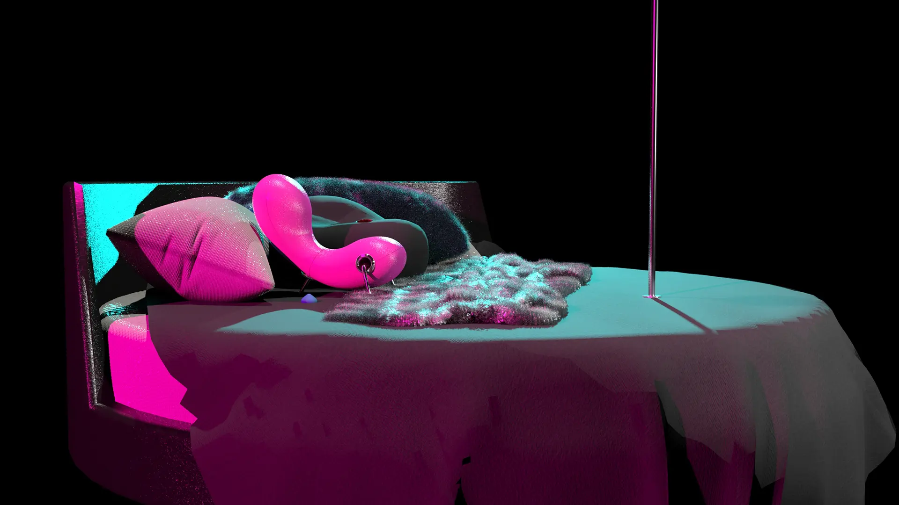
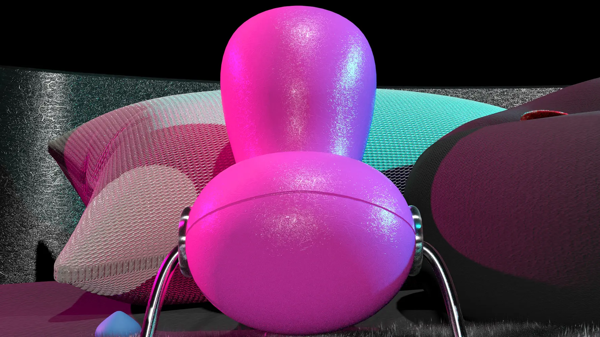
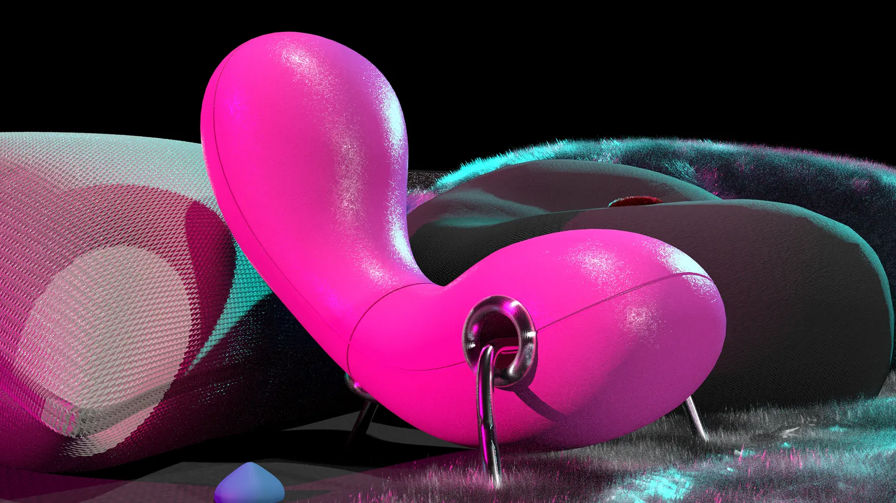
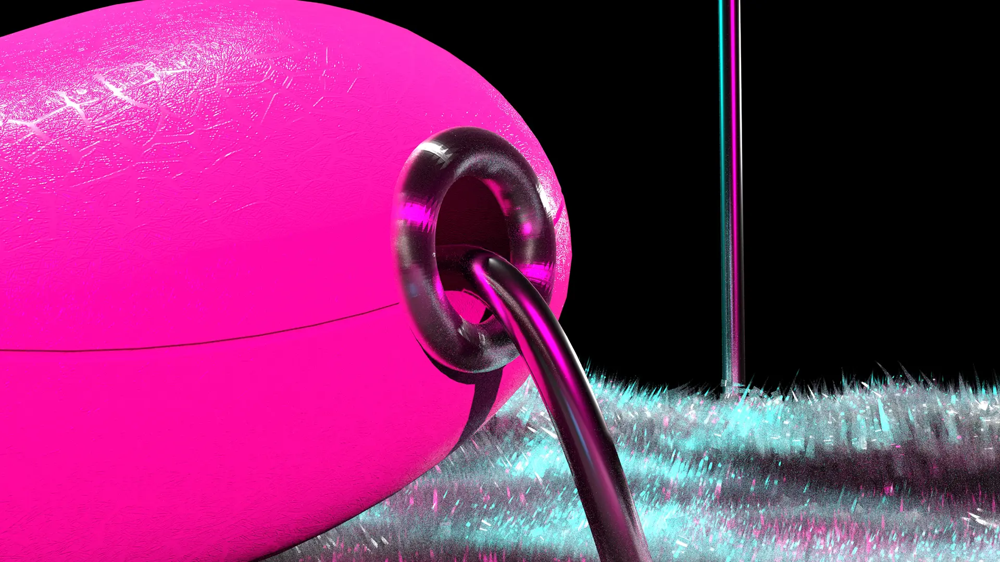

Sexy
For my first run at a 3D modeling program, my task was to recreate the Embryo Chair and model a scene around it. My entire concept hinges on the fact that this chair looks like a vibrator. I was watching "How to Build a Sex Room" at the time and I'm sure that has nothing to do with it.




Class project, February 2023